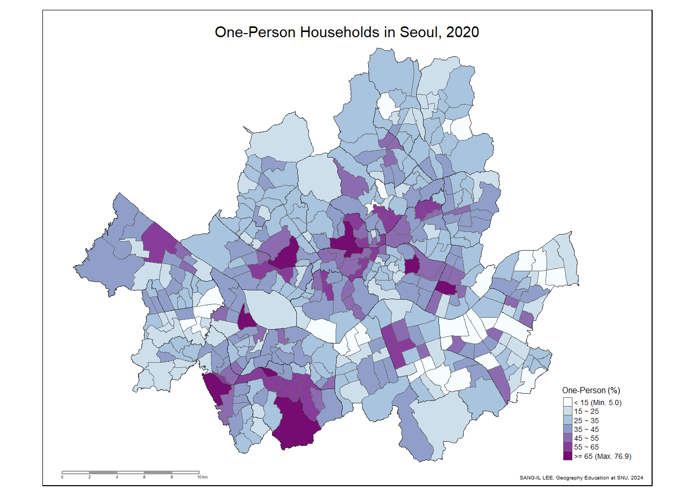
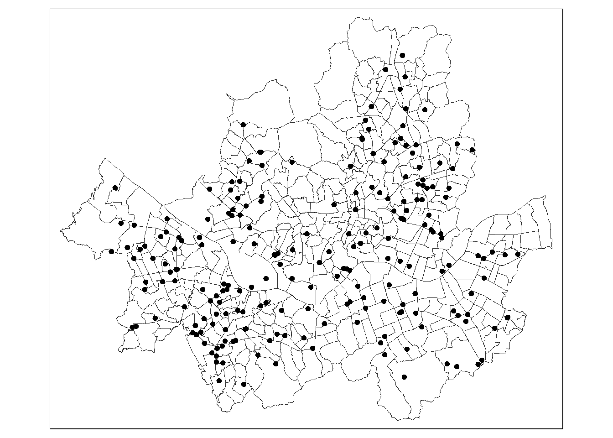
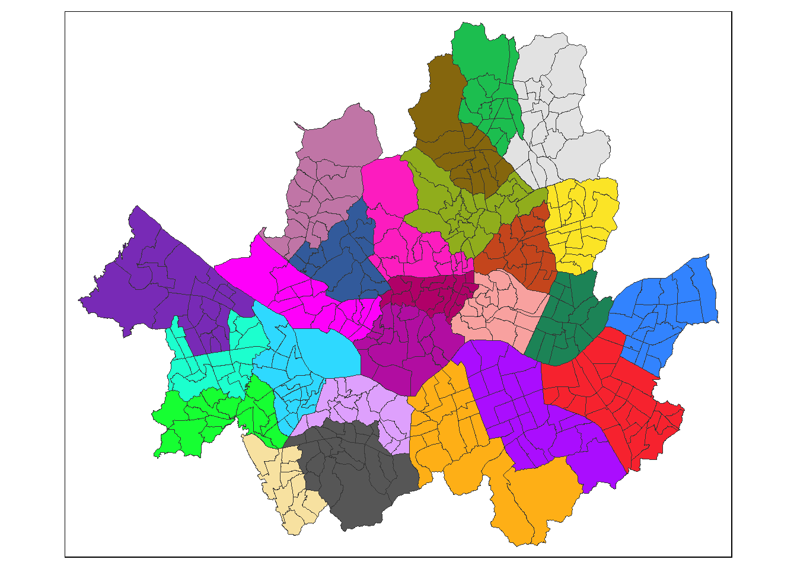
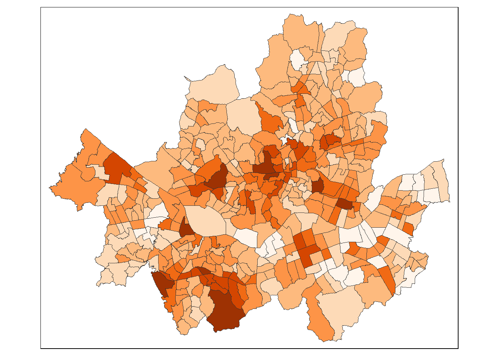
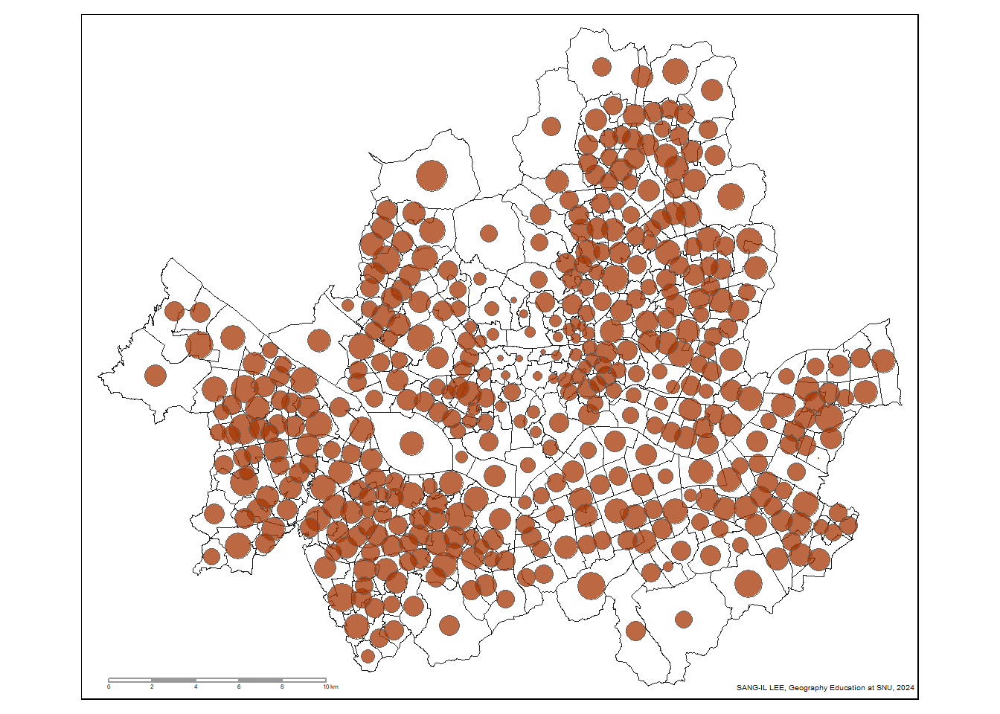
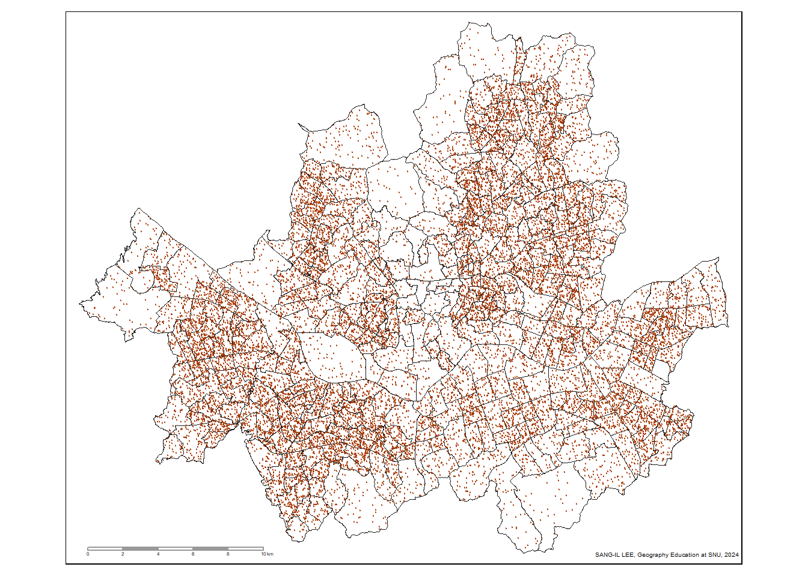
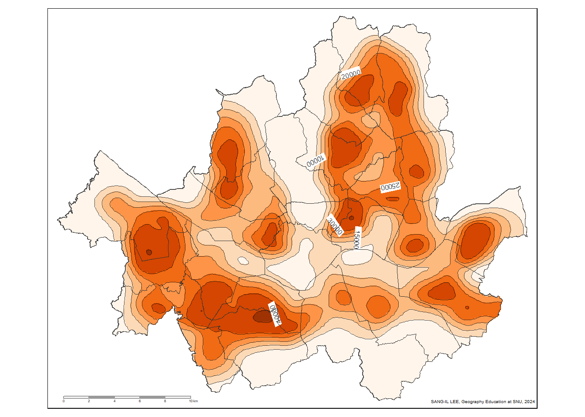

3 지도의 종류
3.1 심상지도와 물리적 지도
3.2 일반도와 주제도
3.2.1 일반도
3.2.2 주제도
3.2.2.1 전형적인 주제도
- 필수적인 패키지 불러오기
- 지리공간데이터 불러오기
seoul_EMD <- st_read(
"D:/My R/Korean Administrative Areas/행정구역 셰이프 파일/2 Original Cleaning/2021_4Q/SEOUL_EMD_2021_4Q.shp", options = "ENCODING=CP949"
) options: ENCODING=CP949
Reading layer `SEOUL_EMD_2021_4Q' from data source
`D:\My R\Korean Administrative Areas\행정구역 셰이프 파일\2 Original Cleaning\2021_4Q\SEOUL_EMD_2021_4Q.shp'
using driver `ESRI Shapefile'
Simple feature collection with 426 features and 15 fields
Geometry type: POLYGON
Dimension: XY
Bounding box: xmin: 935035.3 ymin: 1936666 xmax: 972067.6 ymax: 1966987
Projected CRS: KGD2002 / Unified CSseoul_EMD_2020 <- st_read(
"D:/My R/Korean Administrative Areas/행정구역 셰이프 파일/2 Original Cleaning/2020_2Q/SEOUL_EMD_2020_2Q.shp", options = "ENCODING=CP949"
) options: ENCODING=CP949
Reading layer `SEOUL_EMD_2020_2Q' from data source
`D:\My R\Korean Administrative Areas\행정구역 셰이프 파일\2 Original Cleaning\2020_2Q\SEOUL_EMD_2020_2Q.shp'
using driver `ESRI Shapefile'
Simple feature collection with 425 features and 15 fields
Geometry type: POLYGON
Dimension: XY
Bounding box: xmin: 935035.3 ymin: 1936666 xmax: 972067.6 ymax: 1966987
Projected CRS: KGD2002 / Unified CSseoul_gu <- st_read(
"D:/My R/Korean Administrative Areas/행정구역 셰이프 파일/2 Original Cleaning/2021_4Q/SEOUL_GU_2021_4Q.shp", options = "ENCODING=CP949"
) options: ENCODING=CP949
Reading layer `SEOUL_GU_2021_4Q' from data source
`D:\My R\Korean Administrative Areas\행정구역 셰이프 파일\2 Original Cleaning\2021_4Q\SEOUL_GU_2021_4Q.shp'
using driver `ESRI Shapefile'
Simple feature collection with 25 features and 9 fields
Geometry type: POLYGON
Dimension: XY
Bounding box: xmin: 935035.3 ymin: 1936666 xmax: 972067.6 ymax: 1966987
Projected CRS: KGD2002 / Unified CSseoul_sido <- st_read(
"D:/My R/Korean Administrative Areas/행정구역 셰이프 파일/2 Original Cleaning/2021_4Q/SEOUL_SIDO_2021_4Q.shp", options = "ENCODING=CP949"
)options: ENCODING=CP949
Reading layer `SEOUL_SIDO_2021_4Q' from data source
`D:\My R\Korean Administrative Areas\행정구역 셰이프 파일\2 Original Cleaning\2021_4Q\SEOUL_SIDO_2021_4Q.shp'
using driver `ESRI Shapefile'
Simple feature collection with 1 feature and 4 fields
Geometry type: POLYGON
Dimension: XY
Bounding box: xmin: 935035.3 ymin: 1936666 xmax: 972067.6 ymax: 1966987
Projected CRS: KGD2002 / Unified CS- 지도 확인
qtm(seoul_EMD_2020)- 1인가구 속성 데이터 불러오기
house_SDGGEMD_2020 <- read_excel(
"D:/My R/Population Geography/3 Population Structure/Housing_Size_2020_Adj.xlsx", sheet = 1
)
glimpse(house_SDGGEMD_2020)Rows: 3,809
Columns: 17
$ Code <dbl> 0, 3, 4, 5, 11, 21, 22, 23, 24, 25, 26, 29, 31, 32, 33, 34, 3…
$ Region <chr> "전국", "동부", "읍부", "면부", "서울특별시", "부산광역시", "…
$ T_house <dbl> 20926710, 16896701, 2021664, 2008345, 3982290, 1405037, 98581…
$ House1 <dbl> 6643354, 5300490, 620899, 721965, 1390701, 455207, 304543, 32…
$ House2 <dbl> 5864525, 4533570, 600001, 730954, 1033901, 411455, 276237, 31…
$ House3 <dbl> 4200629, 3498178, 394057, 308394, 792690, 282233, 205048, 251…
$ House4 <dbl> 3271315, 2796159, 303647, 171509, 602791, 203769, 159654, 198…
$ House5 <dbl> 761417, 625579, 81207, 54631, 130122, 42608, 33131, 44949, 24…
$ House6 <dbl> 147172, 115014, 16862, 15296, 25770, 7874, 5976, 8440, 4011, …
$ House7 <dbl> 38298, 27711, 4991, 5596, 6315, 1891, 1227, 2127, 941, 967, 5…
$ House1_p <dbl> 31.74581, 31.36997, 30.71227, 35.94826, 34.92214, 32.39822, 3…
$ House2_p <dbl> 28.02411, 26.83110, 29.67857, 36.39584, 25.96247, 29.28428, 2…
$ House3_p <dbl> 20.07305, 20.70332, 19.49172, 15.35563, 19.90538, 20.08723, 2…
$ House4_p <dbl> 15.632247, 16.548550, 15.019657, 8.539818, 15.136793, 14.5027…
$ House5_p <dbl> 3.638494, 3.702374, 4.016840, 2.720200, 3.267517, 3.032518, 3…
$ House6_p <dbl> 0.7032735, 0.6806891, 0.8340654, 0.7616221, 0.6471151, 0.5604…
$ House7_p <dbl> 0.1830101, 0.1640024, 0.2468758, 0.2786374, 0.1585771, 0.1345…- 결합하기
seoul_EMD_2020 <- seoul_EMD_2020 |>
mutate(
EMD_ID = as.numeric(EMD_ID)
)
my_df <-seoul_EMD_2020 |>
left_join(
house_SDGGEMD_2020, join_by(EMD_ID == Code)
)- 전형적인 주제도 제작
min_max <- my_df |>
st_drop_geometry() |>
summarize(
min_value = format(round(min(House1_p, na.rm = TRUE),
digits = 1), nsmall = 1),
max_value = format(round(max(House1_p, na.rm = TRUE),
digits = 1), nsmall = 1)
)
min.val <- min_max[[1]]
max.val <- min_max[[2]]
my_map <- tm_shape(my_df) +
tm_polygons(
"House1_p",
style = "fixed",
palette = "BuPu",
border.col = "gray40",
lwd = 0.25,
border.alpha = 1,
breaks = c(-Inf, 15, 25, 35, 45, 55, 65, Inf),
labels = c(paste0("< 15", " (Min. ", min.val, ")"),
"15 ~ 25", "25 ~ 35", "35 ~ 45", "45 ~ 55",
"55 ~ 65", paste0(">= 65", " (Max. ", max.val, ")")),
title = "One-Person (%)",
legend.hist = FALSE,
legend.show = TRUE) +
tm_shape(seoul_gu) +
tm_polygons(alpha = 0, border.col = "gray20", lwd = 0.75) +
tm_legend(
legend.format = list(digits = 1),
legend.title.size = 0.6,
legend.text.size = 0.45,
legend.position = c(0.85, 0.05)) +
tm_layout(
frame = TRUE,
title = "One-Person Households in Seoul, 2020",
title.position = c("center", "top"),
title.size = 0.9,
bg.color = "white",
inner.margins = c(0.05, 0.05, 0.08, 0.12)) +
tm_scale_bar(
color.dark = "gray60",
text.size = 0.25,
breaks = seq(0, 10, 2),
position = c(0.03, 0.01)) +
tm_credits(
"SANG-IL LEE, Geograhy Education at SNU, 2024",
size = 0.3, position = c(0.78, 0.01)
)
my_map
- 저장
3.2.3 일반도-주제도 연속체
3.2.3.1 피처맵
- 지도 제작
my_map <- my_df |>
tm_shape() +
tm_borders(col = "gray20", lwd = 0.75)
my_map- 저장
3.2.3.2 사건 분포도
- 사망 교통사고 데이터 불러오기
accident <- st_read("D:/My R/Vector Data Manipulation Korea/Public_Data_Portal/accident_seoul_2022.shp")Reading layer `accident_seoul_2022' from data source
`D:\My R\Vector Data Manipulation Korea\Public_Data_Portal\accident_seoul_2022.shp'
using driver `ESRI Shapefile'
Simple feature collection with 215 features and 21 fields
Geometry type: POINT
Dimension: XY
Bounding box: xmin: 938902 ymin: 1939409 xmax: 969421 ymax: 1964119
Projected CRS: KGD2002 / Unified CS- 지도 제작
my_map <- my_df |>
tm_shape() +
tm_borders(col = "gray20", lwd = 0.75) +
tm_shape(accident) + tm_dots(size = 0.15)
my_map
- 저장
3.2.3.3 정성적 주제도
- 지도 제작
my_map <- my_df |>
tm_shape() +
tm_polygons(
col = "SGG1_NM",
border.col = "gray20", lwd = 0.75,
palette = pals::alphabet2(),
legend.show = FALSE
)
my_map
- 저장
3.2.3.4 정량적 주제도
- 지도 제작
my_map <- my_df |>
tm_shape() +
tm_polygons(
col = "House1_p",
breaks = c(-Inf, 15, 25, 35, 45, 55, 65, Inf),
palette = "Oranges",
border.col = "gray20", lwd = 0.75,
legend.show = FALSE
)
my_map
- 저장
3.3 정성적 주제도와 정량적 주제도
3.3.1 정량적 주제도
3.3.1.1 서울의 인구분포 사례
- 인구수 속성 데이터 불러오기
pop_SDGGEMD_2020 <- read_excel(
"D:/My R/Korea Census Data Manipulation/1 Population Basic/DM_ADJ_Census_2020.xlsx", sheet = 1
)- 결합하기: 위와 구분하기 위해
my_df_2라고 지정
- 인구밀도 계산
3.3.1.2 도형표현도
- 지도 제작
my_map <- tm_shape(my_df_2) +
tm_borders(col = "gray10", lwd = 0.25) +
tm_shape(seoul_gu) + tm_borders(col = "gray10", lwd = 0.75) +
tm_shape(my_df_2) +
tm_symbols(size = "pop_t", scale = 1.5, alpha = 0.75,
col = "#a63603",border.lwd = 0,
legend.size.show = FALSE) +
tm_scale_bar(
color.dark = "gray60",
text.size = 0.25,
breaks = seq(0, 10, 2),
position = c(0.03, 0.01)) +
tm_credits(
"SANG-IL LEE, Geograhy Education at SNU, 2024",
size = 0.3, position = c(0.78, 0.01)
)
my_map
- 저장
3.3.1.3 점밀도도
- 포인트 생성: 시간이 조금 걸리므로 따로 실행
- 지도 제작
my_map <- tm_shape(my_df_2) +
tm_borders(col = "gray10", lwd = 0.25) +
tm_shape(my_seoul_point) +
tm_dots(size = 0.005, alpha = 0.75, col = "#a63603") +
tm_shape(seoul_gu) + tm_borders(col = "gray10", lwd = 0.75) +
tm_scale_bar(
color.dark = "gray60",
text.size = 0.25,
breaks = seq(0, 10, 2),
position = c(0.03, 0.01)) +
tm_credits(
"SANG-IL LEE, Geograhy Education at SNU, 2024",
size = 0.3, position = c(0.78, 0.01)
)
my_map
- 저장
3.3.1.4 단계구분도
- 지도 제작
my_map <- tm_shape(my_df_2) +
tm_polygons(
"pop_den_t",
style = "fixed",
palette = "Oranges",
border.col = "gray40",
lwd = 0.25,
border.alpha = 1,
breaks = c(-Inf, 10000, 15000, 20000, 25000, 30000, 40000, Inf),
legend.show = FALSE) +
tm_shape(seoul_gu) +
tm_polygons(alpha = 0, border.col = "gray20", lwd = 0.75) +
tm_credits(
"SANG-IL LEE, Geograhy Education at SNU, 2024",
size = 0.3, position = c(0.78, 0.01)
)
my_map- 저장
3.3.1.5 등치선도
- 준비 과정
# sp로 만들기
library(sp)
my_centroid <- st_centroid(my_df_2)
my_centroid_sp <- as(my_centroid, "Spatial")
my_df_2_sp <- as(my_df_2, "Spatial")
my_seoul <- st_union(seoul_gu)
my_seoul_sp <- as(my_seoul, "Spatial")
# 인터폴레이션을 위한 바탕 래스터 만들고 정의하기
library(terra)
grd <- as.data.frame(spsample(my_seoul_sp, "regular", n = 100000))
names(grd) <- c("X", "Y")
coordinates(grd) <- c("X", "Y")
gridded(grd) <- TRUE
fullgrid(grd) <- TRUE
crs(grd) <- crs(my_centroid_sp)
# TPS (thin plate spline) 방식의 인터폴레이션 실행 및 등치선 생성
library(fields)
library(raster)
m <- Tps(coordinates(my_centroid_sp), my_centroid_sp$pop_den_t)
tps <- interpolate(raster(grd), m)
tps <- mask(tps, my_seoul_sp)
crs(tps) <- CRS('+init=EPSG:5179') # 힘들었음. st_crs()는 먹지 않음.
cont.tps <- rasterToContour(tps)- 지도 제작
my_map <- tm_shape(seoul_gu) +
tm_borders() +
tm_shape(tps) +
tm_raster(
style = "fixed",
breaks = c(-Inf, 10000, 15000, 20000, 25000, 30000, 40000, Inf), palette = "Oranges", legend.show = FALSE) +
tm_shape(subset(
cont.tps,
level %in% c(10000, 15000, 20000, 25000, 30000, 40000))) +
tm_iso(
text = "level",
color = "black",
lwd = 0.5,
size = 0.5,
alpha = 0.7) +
tm_shape(seoul_gu) +
tm_polygons(alpha = 0, border.col = "gray20", lwd = 0.75) +
tm_credits(
"SANG-IL LEE, Geograhy Education at SNU, 2024",
size = 0.3, position = c(0.78, 0.01)
)
my_map
- 저장